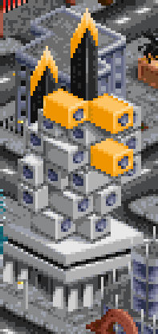 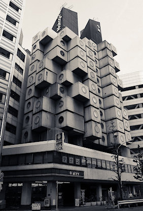
Nakagin kapszula-toronyház, Tokió, 1972. Tervezte: Kurokawa K.
Ahogy legutóbb, most is egy sci-fi anime antológiáról írok egy rövid bemutatót.
Taku Mayumura története alapján Masao Maruyama producer keze alatt három, méltán híres rendezőt (Rintaro, Yoshiaki Kawajiri, Katsuhiro Ôtomo) szedtek össze, hogy Neo Tokyo címmel egy filmben vászonra vigyék a következő három nem mindennapi történetet.
Sajnos nem találtam meg az eredeti trailert, így nekem kellett összevadászni valamit a netről. A következőt sikerült:
https://www.youtube.com/watch?v=T9wLTSgfNOA
Rintaro – Labyrinth-Labyrintos
Rintaro rendezte a híres, 2001-es Metropolis című animét, ami ha jól emlékszem világsiker volt, de ha nem az sem érdekel, mert én nagyon szeretem. A rendező viszonylag nehéz feladatot kapott azzal, hogy egyfajta keretet kellett készítenie, ami összefogja az egész filmet.
Rögtön a film elején egy igazán furcsa világba kerülünk, ahol egy kislány, Sachi és a macskája, Cicerone fogócskáznak. Játék közben pedig egy ingaórán keresztül egy rémisztő és számukra mégis érdekes és mulatságos labirintusba jutnak, melynek végén egy cirkusz áll. Egy bohóc várja őket a bejáratnál, aki utat mutat nekik, így vezetve át a nézőt az anime következő rövidfilmjébe.
{kind=link}
{kind=link}
Yoshiaki Kawajiri – The Running Man
Valahol a jövőben az emberek egyik kedvenc sporteseménye egy gyilkos „autóverseny.” Egy ilyen versenyre látogat el a történet narrátoraként szereplő újságíró. Egy cikket ír az eddigi legsikeresebb versenyzőről, Zach Hugh-ról, aki már tíz éve versenyez és minden futamát túlélte. Az újságíró, hogy miképpen, azt nem lehet tudni, bejut Hugh-hoz, aki éppen elmélyülten koncentrál. Ekkor az újságíró rájön, hogy Zach Hugh valamiféle telekinetikus képességgel rendelkezik, ugyanis koncentrációja során maga körül mindent összezúz valamiféle láthatatlan erő.
A verseny során Hugh minden ellenfele és maga Hugh is saját erejének áldozata lesz. Egy elhasznált, kiégett embert mutat be ez a film: „A szíve, amely valaha másokat olyan erősen buzdított már saját magát sem buzdította, csak megszokásból dobogott, mert erre képes volt.”
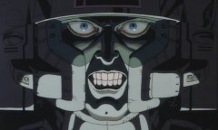
The Running Man
{kind=link}
{kind=link}
Katsuhiro Ôtomo – Construction Cancellation Order
Azt hiszem Katsuhiro Ôtomo munkásságát nem kell ecsetelnem, mert ezt szerintem több korábbi bejegyzésemben is megtettem, szóval most ezt át is ugrom, és rátérek a lényegre.
Egy dél-amerikai köztársaság, Aloana újonnan választott kormánya felbont egy korábban kötött, hatalmas szerződést az államnak épülő, és jelenleg félkész állapotban levő 444-es komplexumról. A kivitelező vállalat sietve kiküldi a teljesen automatizált építkezésre Tsutomu Sugioka-t felügyelőnek, hogy azonnal állítsa le azt, és hogy derítse ki mi történhetett a korábbi felügyelővel, akit a cég nem tud elérni. Hősünk meg is érkezik a dzsungel mélyén levő 444-es építkezésre, ahol a 444-1-es számú robot fogadja, és vezeti körbe. Sajnos Sugioka-nak nem sikerül a robottal leállíttatni a munkálatokat, és helyzete egyre kilátástalanabbá válik. A gépek egyszerűen nem engedelmeskednek az új felügyelőnek, az építkezés pedig folyamatosan nyeli a pénzt.
Tsutomu Sugioka majdnem arra a sorsa jut, ami a korábbi vezetőé lehetett, bezárják. Végül elpusztítja a 444-1-es robotot, elindul, hogy elpusztítsa a gépeket összekötő központot, ezáltal leállítva az egész építkezést. Eztán érkezik egy új utasítás, mely szerint azonnal folytatni kell az építkezést, mivel a kivitelezőnek sikerült megegyezésre jutni az új kormánnyal. Tsutomu Sugioka erről az üzenetről már nem értesül. Tökéletes bemutatása ez ember és gép ellentétének és egyben egymásra utaltságának.
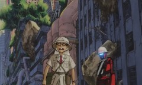 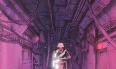
Construction Cancellation Order
{kind=link}
{kind=link}
Sajnálom, hogy ez a poszt ilyen rövidre sikeredett, de most, éjfél felé már elég fáradt vagyok. Végszó!
Ugyan az egész film csak ötven perc, de mindenképp megéri megnézni. Lélegzetelállító látvány, csodálatos mechanical design, magával ragadó képi világ és zene, végül, de nem utolsó sorban eredeti történet. Remélem ennél senkinek sem kell több. (Szívesen megnézném moziban.)
A múlt héten találtam a következő kis játékot, de egészen eddig túl fáradt voltam és/vagy nem volt időm írni róla, de mivel nemzeti ünnep van, így úgy gondoltam, hogy ma nem dolgozom, csak itthon munkálkodok, takarítok, és írok egy kicsit ide, a sidenote-ra.
Az Armadillo Run nevű fizikai-logikai játékban egy tatut kell eljuttatni a pályán meghatározott kis részre, ahol ott is kell tartani, amíg őtatusága el nem teleportál, vagy miafranc. Nagyon emlékeztet a TIM2-re és a Bridge Builer, illetve Pontifex sorozatokra, melyekben hasonló célokat kellett elérni.
Egyedül az építést segítő grid hiányzik, de még az is lehet, hogy valahogy be lehet kapcsolni, csak én nem néztem végig a játékhoz leírt instrukciókat. Fontosnak tartom megjegyezni, hogy Wine segítségével a cucc simán fut Linux alatt is. A teljes verzióért húsz dodót — nálam ez amerikai dollárt jelent —, vagy tizenöt ojrót kell fizetni, cserébe a játékot, ötven és pár extra pályát kapunk. Ha valaki már befejezte, akkor sem marad további kihívások nélkül, mert ingyenesen letölthető egy csomó pályacsomag. Videó!
https://www.youtube.com/watch?v=uH4SS2oG_uc
Screenshotot nem teszek be, a játék honlapján úgyis van, és úgy érzem, hogy a fenti videó önmagáért beszél. A játék maga csak pár MB, és nem a gyönyörűséges csili-vili grafikájáért szeretem, hanem nyilván a kihívás miatt, mert ahogy egyre haladok előre, a pályák úgy nehezednek. Mostanában pedig csak ezek a kis játékok tudnak lekötni, amiket akkor veszek elő, amikor akarok, és tíz percre is jó szórakozást nyújtanak, megtornáztatják az agyamat. Megmutattam Rednek is, aki nem vágta rá egyből, hogy fos, csak annyit mondott, hogy „érdekes”, ami nála nagy dícséretnek számít.Gondolkodni, tervezni, alkotni kell. Ezt szeretem.
Pár hete már, hogy megnéztem Katsuhiro Ôtomo Memories című animéjét, ami három, egyenként kb. negyven perces rövid animéből áll. Katsuhiro Ôtomo művész, forgatókönyvíró, filmrendező, akit legtöbben az Akira című mangája, illetve egész estés animéje révén ismernek, nálam nagy kedvenc. Ha valamihez köze van, akkor az már olyan rossz nem lehet.
Valami igazán egyedit kerestem, lehetőleg sci-fi műfajban, így találtam rá a Memories-re. A három rövidfilmet, három, méltán híres japán rendező és készítette, valamint a zseniális Satoshi Kon is részt vett a munkálatokban, mint forgatókönyvíró. Lássuk miről is szól a három anime, ez a három kivételes és végzetes vízió.
https://www.youtube.com/watch?v=WgPS2wRhFxM
Kôji Morimoto – Magnetic Rose
Ez egy hátborzongató sci-fi történet, ami a jövőben, egy űrszemét-szedő teherhajó legénységéről és halálos kalandjukról szól. A jól összeszokott csapat egy rutinmunkát követően egy elhagyatott űrállomásról SOS jeleket fog. Habár nem nagyon szeretnék, nincs más választásuk, mint megvizsgálni a dolgot, ezért két űrhajósukat leküldik az űrállomásra. Először azt hiszik, hogy űrkalózokat fognak az elhagyott állomáson találni, azonban ennél nem is tévedhettek volna nagyobbat. Az állomás régen egy világhíres operaénekesnőé volt. Halála után az állomás mesterséges intelligenciája vette át az irányítást, és próbálta életre kelteni a díva emlékeit. Ennek esik áldozatul a két űrhajós és végül a teherhajó legénysége is, mikor az AI teljes őrületbe csap át.
Monumentális és megrázó. Zene: Yoko Kanno, kiváló.
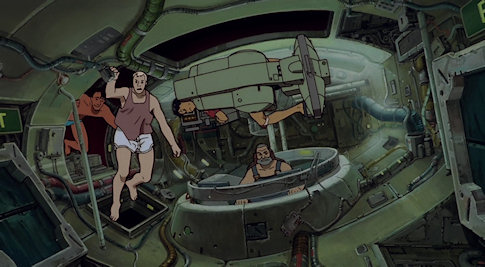
Magnetic Rose
Tensai Okamura – Stink Bomb
Ez a történet sokkal viccesebb, de nem kevésbé tragikus, mint az előző. Tanaka Nobuo sokakkal egyetemben erős megfázással küzd. Hiába kap oltást az orvosától, nem segít rajta. Nobuo egy gyógyszergyártó cégnél dolgozik, és az egyik munkatársa tanácsolja neki, hogy próbálja ki a főnökük asztalán levő egyik új megfázás elleni gyógyszerüket. Nobuo megfogadja a tanácsát, azonban egy másik pirulát kap be a jó helyett. Mivel még mindig nagyon rosszul van, úgy dönt, hogy átmegy a pihenőszobába és szundít egy rövidet, azonban másnap reggelig húzza a lóbőrt, és mikor felébred az intézetben mindenkit eszméletlenül, a földön heverve talál.
Azonnal kiderül, hogy a gyógyszercég nem csak ártatlan influenza és megfázás elleni készítményekkel foglalkozott, hanem a katonaságnak is folytatott kutatásokat. A cég igazgatója azonnal Tokióba rendeli Nobuo-t, hogy vigye el neki az összes titkos iratot. Ekkor kezdődik az igazi kaland, mert előző nap Nobuo pont azt a titkos kutatás eredményeképpen elkészült pirulát kapta be, ami egyszemélyes biológiai fegyverré változtatta őt, miközben erről ő mit sem tud.
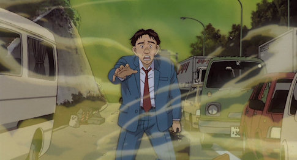
Stink Bomb
Katsuhiro Ôtomo – Cannon Fodder
A három közül, az utolsó film az, amelyik lelkileg a legdurvább hatást váltja ki. Az animáció nagyon kedves és aranyos, de szinte azonnal rájön az ember, hogy nincs minden rendben a világgal. Pár perc után Orwell 1984-e jutott az eszembe, és ez az anime tényleg olyan: félelmetesen nyomasztó, undorító és iszonyatos világot tár a szemünk elé. Egy hatalmas gépesített városban járunk, ahol az élet nap, mint nap ugyanabban a mederben folyik. Minden nap percre pontosan ismétlődnek a teendők. Egy olyan város ez, amely szó szerint tele van ágyúkkal, és egy másik távoli, ismeretlen ellenségre lőnek minden nap. Egy család egy napjába csöppenünk, ahol jól látszik, hogyan vannak rettegés és kontroll alatt tartva az emberek. Az apa az egyik fő lövegnél szolgál, mint ágyútöltő, az anya gránátokat gyárt egy futószalag mellett, míg gyermekük, akit láthatóan lelkesít a háború, egész nap a hadviselésről szóló előadásokat hallgatja.
Az a legdurvább ebben az egészben, hogy ha ezt egy gyerek nézné meg, akkor nála hasonló hatást válthatna ki, mint a filmbéli gyereknél. Borzasztó eszközök ezek, melyet Katsuhiro Ôtomo-nak így sikerült igazán hatásosan bemutatnia.
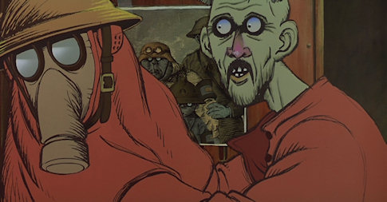
Cannon Fodder
Annak ellenére, hogy mindhárom alkotás nyomasztó, azért akad benne bőven rejtett humor. Mindenek előtt pedig filmről-filmre eltérő és kontrasztos hangulattal találjuk magunkat szembe, gyönyörű.
Petya jegyzi a következő rövid, tudományos, ismeretterjesztő filmet, melyben a nyelvről van szó: „Mi is az a nyelv? Honnan jött? Hová tart? Mit tudnunk róla, és ő mit tud rólunk?” Igazán frappáns és humoros rövidfilm ez, mely remélhetőleg egy sorozat kezdete, és a későbbiekben Petya megörvendeztet minket még hasonló finomságokkal.
Masaru Daisatô egy majdnem átlagos, 30-as, 40-es éveiben járó japán férfi. Csak azért a majdnem, mert ő Dai-Nipponjin, azaz a legnagyobb japán! A munkája, hogy az országban fel-felbukkanó hatalmas szörnyek ellen harcoljon. Felmerül a kérdés, hogy egy egyszerű ember, hogy a fenébe tudja felvenni a harcot az órásszörnyekkel. A válasz egyszerű: elektrosokk hatására gigantikusra nő, és egy tíz emeletes vasrúddal veri szét ellenfelei fejét.
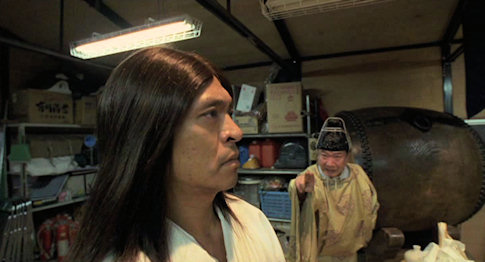
Ennyit a sztoriról, nem akarok minden poént előre lelőni. Majdnem mindent egy nagyon érdekes, dokumentumfilmes szemszögből látunk. Daisatô mindennapjait egy forgatócsoport követi nyomon, interjúk és életszagú jelenetek segítenek megismerni a főhőst. Egyedi hangulatot kölcsönöz a filmnek a sok kézikamerás felvétel, és ehhez képest hatalmas váltást jelentenek a harci jelenetek teátrális kidolgozása. Meg kell jegyeznem, hogy a CGI nem teljesen élethű, de ez engem egyáltalán nem zavart, sőt, a filmnek jót is tesz ez a rajzoltabb hatás.
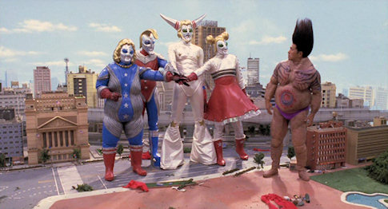
A film, nem jut eszembe hirtelen jobb jelző, eléggé elborult és ez a vége felé csak fokozódik. Olykor morbid, és eszméletlenül jó poénok vannak benne. Az utolsó öt percben folyamatosan röhögtem, fájt is a rekeszizmom a végén. Emlékszem Red arcára kiült a KERNEL PANIC.
A trailert hagytam a legvégére, mert igaz, hogy a filmből van összevágva, de egyáltalán azt adja vissza, amit az ember kap; szerintem teljesen másnak mutatja be, mint ami. Trailernek nagyon ütős, de ehhez a filmhez nem illik, amúgy odabaszós és ezért megtekintése mindenképp ajánlott.
https://www.youtube.com/watch?v=Y64qpMwiOS0
Sajnos a Titanic filmfeszten kihagytam a vetítést, lázas voltam akkor. Megérte bepótolni, mert ez nálam bekerült az alapművek közé. Szerezzétek be, nézzétek meg! Fantasztikus élményt nyújt ez a film, melynek írója, rendezője és egyben főszereplője Hitoshi Matsumoto.
Vasárnap este egy citromos Gösser után összeültünk Reddel, hogy megnézzük a Tokyo! című filmet, ami tulajdonképpen három rendező három rövidfilmjéből áll. (Tudom, tudom… Citromos sör?! De ez a Gösser tényleg jó.) Olyan ez, mint Woody Allen, Francis Ford Coppola és Martin Scorsese New Yorki történetek című munkája, azzal az eltéréssel, hogy más rendezők, más vízióit láthatjuk egy másik városban, Tokióban.
A három rendező nem más, mint Michel Gondry (Egy makulátlan elme örök ragyogása), Leos Carax (Pola X) és Bong Joon-ho (The Host). Híresek, jó filmjeik vannak, és most sem hagytak cserben senkit. A Tokyo! kifrodítja a világot és az embert önmagából, odaszegez a képernyőre és ha már beszippantott, akkor nem hagyja, hogy kizökkenj a világából.
https://www.youtube.com/watch?v=dVlTWz7eY1Q
Michel Gondry – Interior Design
Egy fiatal pár, Akira és Hiroko, Tokióba érkezik, hogy munkát, lakást találjanak maguknak, és beteljesítsék álmaikat. Egy rövid időre Hiroko egyik régi barátnőjénél húzzák meg magukat, amíg nem találnak maguknak valami megfelelő helyet. Pár nap után viszont világosá válik, hogy Akira és Hiroko számára nem lesz könnyű ez az egész. Akira talál magának állást, és saját művészfilmjét is sikerül bemutatnia egy kis (pornó?)moziban. Hirokonak azonban nem jönnek össze a dolgok, nem tud elhelyezkedni, csak teng-leng a városban, egész egyszerűen saját addigi életéből is kirekesztetté válik. Furcsa átváltozáson megy keresztül, amikor fokozatosan székké változik. Mezítelen emberi és szék alakját váltogatva menekül Tokió utcáin, amikor egy zenésznek megtetszik a szék, és egyszerűen hazaviszi. Hiroko emberi alakjában soha nem találta a helyét, míg székként végre boldogan élhet. (Tudom, hogy ez egy kicsit zavaros lehet, higyjetek nekem, nagyon érdekes történet.)
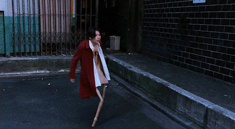
Leos Carax – Merde
A francia „merde” szó magyarul szart jelent. Leos Carax rövidfilmjében a főhős, Merde a csatornákban él. Olykor-olykor előbújik a föld alól, hogy ételt: virágszirmokat és készpénzt szerezzen, valamint cigarettázzon. Egyre többször tűnik fel az utcákon és kelt félelmet a városlakókban, akik „a csatornából jött lény”-nek nevezik. Ezen kívül Merde életét a város alatt éli. Egy nap a csatornában tett sétái egyikén talál egy láda régi gránátot. Ezen a ponton kezdődnek a bajok, Merde egyik este ismét előbújik és elkezdi gránátos ámokfutását. A rendőröknek végül sikerül elfogniuk. A tárgyalásán egy francia ügyvéd képviseli őt, mert a világon csak három olyan ember él, aki érti azt a nyelvet, amit Merde beszél. Rémisztő karakterek és fordulatok jellemzik ezt a filmet. A végét nem árulom el, nem lövöm le a poént.
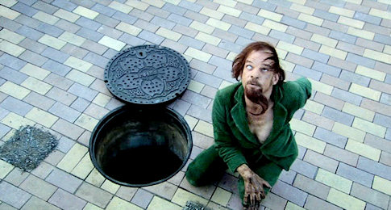
Bong Joon-ho – Shaking Tokyo
A főhős egy hikikomori, aki már több, mint tíz éve nem hagyta el a lakását. Teljesen elszigetelődött, semmiféle szociális képességgel nem rendelkezik már, a társadalmi érintekezés minden formáját kerüli. Megvan a saját ritmusa, mindent mániásan elrendez maga körül, az apja szobájába sose lép be és minden szombaton, amikor pizzát rendel, sosem néz a kiszállítóra. Egy szombaton viszont minden megváltozik, amikor a pizzáslánynak nyit ajtót. Épp földrengés rázza meg a várost, és a lány elájul. Hősünknek fogalma sincs, hogy mit tegyen, meg sem meri érinteni. Végül talál rajta egy gombot, megnyomja, és ezzel felébreszti, a lányt. Miután felébredt, látja, hogy a fickó milyen világban él, és ő is elhatározza, hogy ezentúl hasonlóképpen fog cselekedni. Hősünk azonban nem tudja kiverni őt a fejéből, végül elindul a megkeresni a pizzáslányt. Lakásán kívül furcsamód egy nem is olyan idegen világ várja…
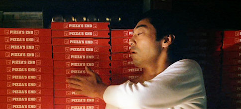
Ha van rá lehetőségetek, akkor szerezzétek be. Szerintem megéri, különösen Leos Carax Merde című rövidfilmje miatt. Kétség kívül ez a leghatásosabb mindhárom közül.
{kind=link}
Kezdjünk egyből egy laza trailerrel:
https://www.youtube.com/watch?v=0r_6YoQZ8bM
Régóta nem láttam már westernt, dél-koreait pedig még soha. Így volt ez egészen vasárnap estig, amikor sorra került Kim Ji-woon The Good, the Bad, the Weird című filmje. Első ránézésre hibátlannak tűnt a dolog. Elárulom, másodszor is az volt.
Árulkodó lehet a cím, az ember azt gondolja, nyilván van valami köze Sergio Leone A Jó, a Rossz és a Csúfjához. Ez csak annyiban igaz, hogy hasonló a felállás: egy térkép, három ellenfél még néhány bandita és egy hadsereg. Félreértés ne essék, szerintem ez nem egy remake. Remake-en mondjuk Gus Van Sant ’98-as Psycho-ját, illetve Camero Crowe Vanília égboltját értem, amik rendre elmaradnak az eredetiektől (Hitchcock: Psycho, Alejandro Amenábar: Abre los ojos).
Az 1930-as évek Mandzsúriájában járunk. Amint írtam, adott három ember: Yoon Tae-goo (The Weird) a szimpla rabló, aki a szakmájában igen kiváló, Park Chang-yi (The Bad) Mandzsúria legvérszomjasabb és legkegyetlenebb zsoldosa, Park Do-won (The Good) pedig egy kíméletlen fejvadász. Fűszerezzük meg az egészet egy végtelen sivatagos tájjal, egy pár rablóbandával és egy különleges térképpel. El is készült az akcióval teli westernkomédia!

Próbálom gyarapítani a szavak számát, de tudnám minek. Szerintem elég annyit mondanom, hogy az eltalált karakterek, a hatalmas poénok, a látványos akciójelenetek és a fantasztikus filmzene tökéletes elegye biztos szórakozást nyújt. Bár a Sukiyaki Western Django-t még nem láttam, de meg merem kockáztatni, hogy ez az utóbbi évek legjobb ázsiai westernje. :)
A Discovery-n látható rövidfilmek közül Michael Lau alkotása a kedvencem: